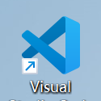
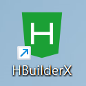
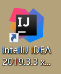

网页设计规划
对于网站风格，我主要采用白色为主色调，淡蓝色为辅色调。
对于网站建设技术部分，这个网站绝大部分都是使用Div+Css,盒子套盒子层次嵌套；还使用了JavaScript以达到动态效果；并且有一小部分人机交互的内容。
在内容方面，我采用提供丰富的图文并茂的内容，以吸引用户的注意力，并通过清晰的导航结构和页面布局来引导用户浏览。
Visual Studio Code 是由微软开发的一款免费开源的代码编辑器，支持多种编程语言。
HBuilderX 是由DCloud公司推出的一款专业的前端开发IDE，支持多种前端技术。
IDEA 全称 IntelliJ IDEA，是java编程语言的集成开发环境。
对于网站风格，我主要采用白色为主色调，淡蓝色为辅色调。
对于网站建设技术部分，这个网站绝大部分都是使用Div+Css,盒子套盒子层次嵌套；还使用了JavaScript以达到动态效果；并且有一小部分人机交互的内容。
在内容方面，我采用提供丰富的图文并茂的内容，以吸引用户的注意力，并通过清晰的导航结构和页面布局来引导用户浏览。
HTML是构建网页的基础语言，用于定义网页的结构和内容。
CSS用于样式设计，包括布局、颜色、字体等，使网页呈现出美观的外观。
JavaScript用于实现网页的交互功能，包括动态效果、表单验证等。
学习路线大致为：HTML5+CSS3+JavaScript+Vue+Bootstrap
学习网页制作一定要学会实操，同时要学会手敲代码，减少对DW可视化拖动的依赖
JavaScript 的有效利用对网页有很多作用，主要体现在：
1.交互性增强:JavaScript 可以让网页与用户之间实现更丰富的交互，例如表单验证、按钮点击、下拉菜单等。
2.动画效果：JavaScript 可以用来创建各种动画效果，如淡入淡出、滑动、缩放等，使网页更生动活泼。
3.浏览器兼容性：JavaScript 可以通过检测浏览器特性来提供不同的代码分支，以确保网页在不同的浏览器和平台上都能正常运行。这有助于保证网页的兼容性和稳定性。